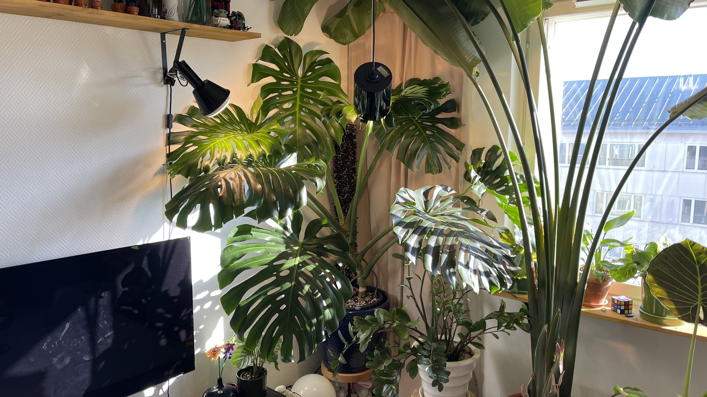
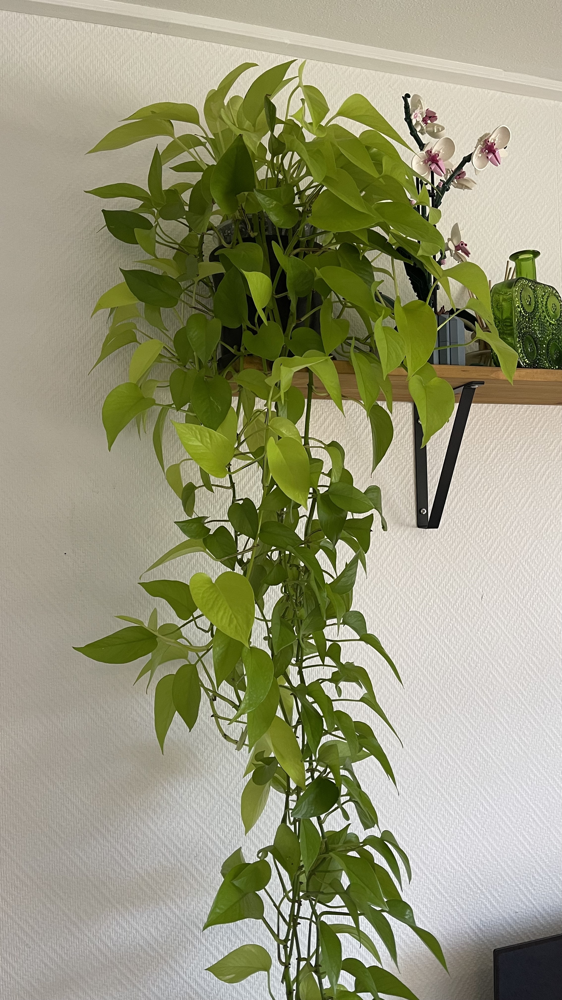
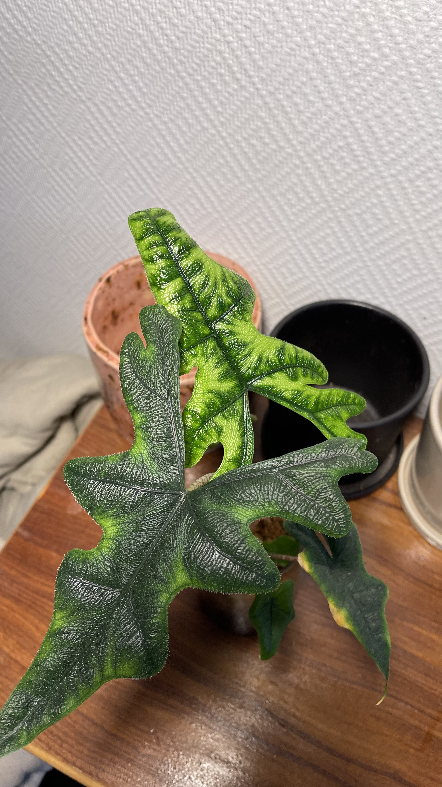
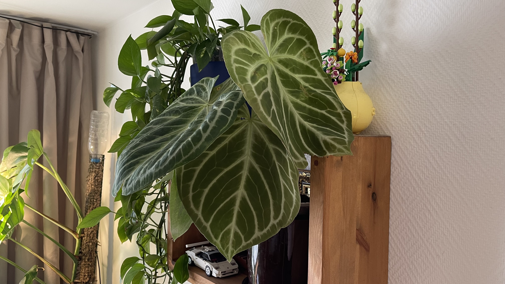
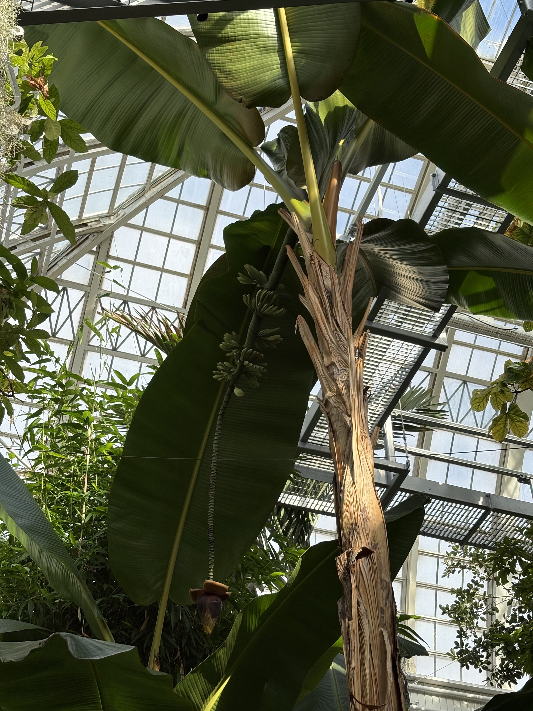
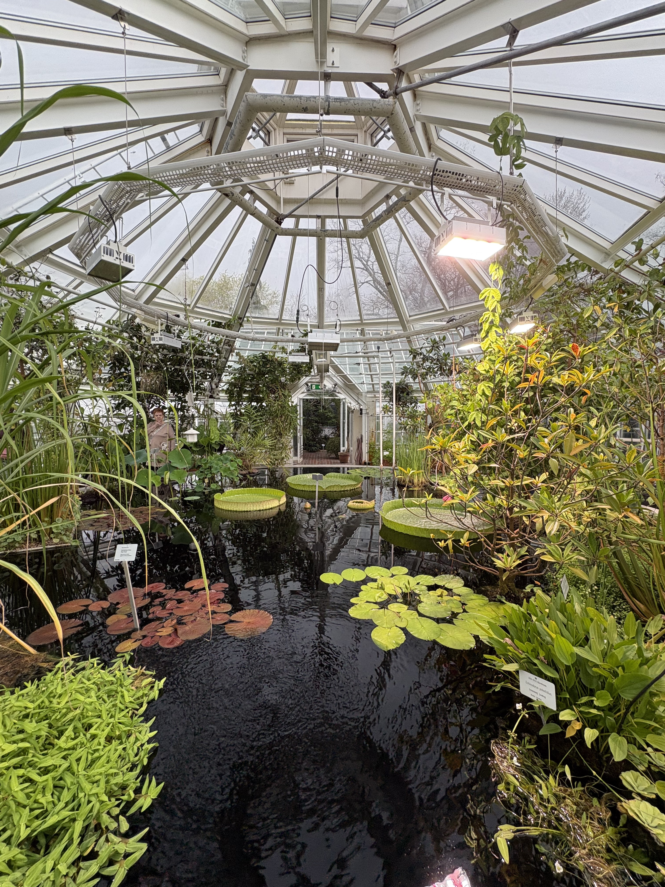

Galleria ja inspiraatio
Galleriaan olen koonnut kuvia omista viherkasveista, kasvupaikoista ja pari kuvaa myös kasvitieteellisestä puutarhasta. Toivottavasti näistä kuvista löytyy inspiraatiota ja iloa kaikille viherkasvien ystäville!





